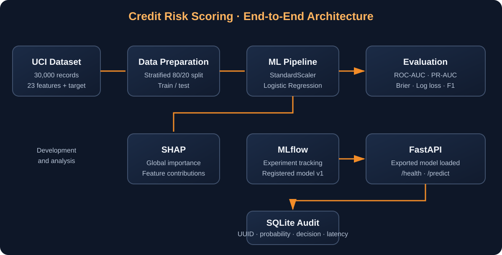

Credit Risk Scoring API
An end-to-end machine learning workflow that estimates the probability of next-month credit-card default, then serves predictions through a REST API with experiment tracking, explainability, and prediction-level audit logging.
Project overview
Problem
Estimate whether an existing credit-card customer will default on payment in the following month. The result is a risk signal for review, not an automated credit approval or rejection.
Dataset
UCI Default of Credit Card Clients, dataset ID 350: 30,000 records, 23 predictors and a binary target. The data describes existing card clients in Taiwan.
Model
A scikit-learn Pipeline combining StandardScaler and LogisticRegression, trained with a stratified 80/20 train/test split.
Engineering
SHAP explainability, MLflow experiment tracking and model registration, FastAPI inference endpoints, Pydantic input validation, and SQLite prediction audit records.
Solution architecture
The workflow moves from dataset preparation and model development through explainability and model registry, then into API inference and audit logging.

Model development
1 · Data preparation
Loaded UCI dataset ID 350, combined features and target, inspected the data, and prepared a stratified 80/20 split: 24,000 training and 6,000 test records.
2 · Baseline pipeline
StandardScaler and LogisticRegression are combined in one pipeline so preprocessing is consistently applied during training and inference.
3 · Evaluation
Evaluated ROC-AUC, PR-AUC, Brier score, log loss, accuracy, precision, recall, and F1 on the held-out test data.
4 · Explainability
SHAP LinearExplainer was used to inspect global feature importance and the direction of individual feature contributions.
Model performance
Recorded MLflow metrics from the held-out 6,000-record test set.
| Metric | Result | What it measures |
|---|---|---|
| ROC-AUC | 0.7282 | Ranking/discrimination between default and non-default. |
| PR-AUC | 0.5071 | Precision-recall performance for the positive class. |
| Accuracy | 0.8118 | Overall fraction of correct classifications. |
| Precision | 0.7156 | Share of predicted defaults that were actual defaults. |
| Recall | 0.2479 | Share of actual defaults identified at the evaluated threshold. |
| F1 score | 0.3682 | Harmonic mean of precision and recall. |
| Brier score | 0.1441 | Mean squared probability prediction error. |
| Log loss | 0.4633 | Probability-based classification loss. |
Explainability with SHAP
Global drivers
September 2005 repayment status (X6) was the strongest global contributor. Other influential features included September bill amount (X12), credit limit (X1), and September previous payment (X18).
Feature effects
Higher positive repayment-status codes generally pushed the model output toward default, while negative values generally pushed it away. SHAP values here are log-odds contributions, not percentage-point changes in probability.
MLflow model lifecycle
- Experiment tracked under
Credit_Risk_Scoring. - Logged model configuration, sample counts, evaluation metrics, dataset identifier, and SHA-256 dataset fingerprint.
- Registered model:
credit-risk-logistic-regression, version 1. - Loaded the registered model and verified prediction equivalence with the original pipeline.
- Exported the model artifact for local API serving.
REST API and audit logging
GET /health
Checks API availability and model metadata.
POST /predict
Accepts 23 input features, validates with Pydantic, and returns probability, decision label, threshold, model metadata, request ID, and latency.
Decision routing
Prototype threshold is 0.30. Probabilities at or above it are labeled MANUAL_REVIEW; lower probabilities are labeled LOW_RISK.
SQLite audit trail
Each prediction stores a generated UUID, timestamp, model name/version/run ID, probability, threshold, decision, and latency.
Potential next steps
- Expand API tests for validation, prediction consistency, and audit persistence.
- Evaluate threshold choices against explicit false-positive and false-negative costs.
- Assess probability calibration and model stability on additional data.
- Review fairness, privacy, security, monitoring, and applicable regulatory requirements before any consequential use.